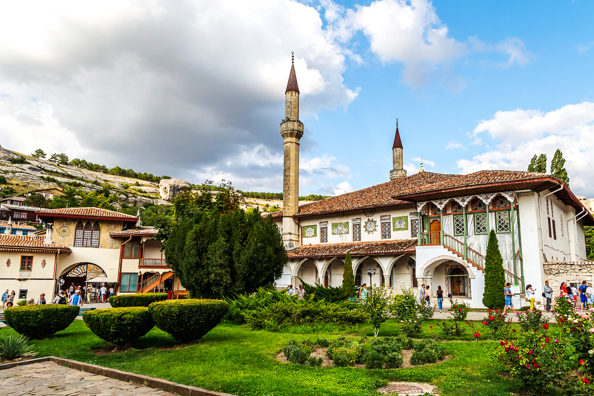
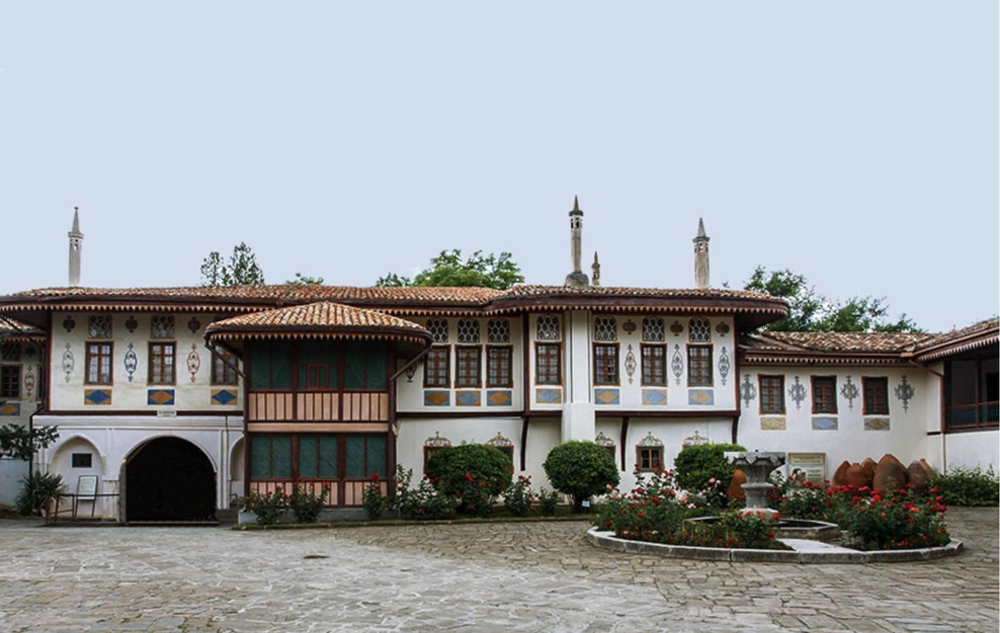
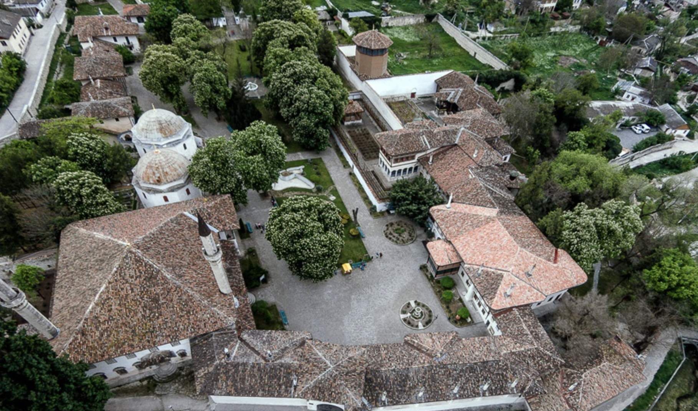
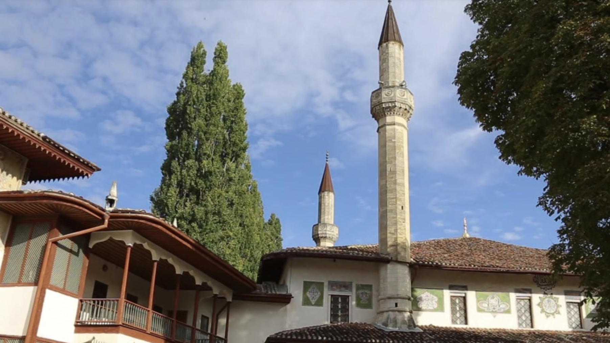
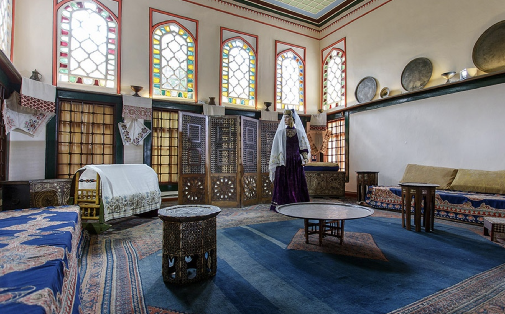
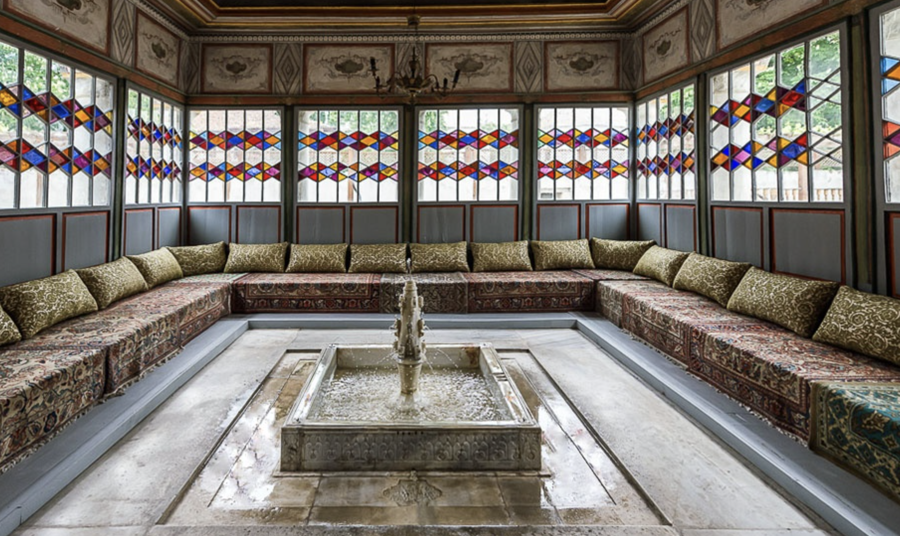

Vatan

Ханский дворец

Резиденция крымских ханов
Общие факты
Крымский
полуостров по достоинству славится своими историческими памятниками, каждый из которых бесценен и
неповторим. Однако античные руины, средневековые крепости, пещерные монастыри и приморские парки можно
увидеть и за пределами полуострова. Но что касается крымско-татарских дворцов, то в мире можно найти лишь
один единственный – Ханский дворец в городе Бахчисарай.
Краткие факты
– Дворец был построен в XVI веке и служил резиденцией крымских ханов из династии Гераев. Строительство началось
в
1532 году при ханах Сахиб I Герае и Менгли II Герае.
– На протяжении веков дворец подвергался многочисленным реконструкциям и реставрациям. Советские власти также проводили работы по сохранению комплекса. В настоящее время дворец является музеем и охраняется как памятник архитектуры.
– Бахчисарайский ханский дворец является ярким образцом османской архитектуры с элементами крымско-татарского стиля. В его оформлении можно увидеть богатые декоративные элементы, мозаики, резьбу по дереву и камню.
– Одной из самых известных достопримечательностей дворца является Фонтан слёз (Сельсебиль). Этот фонтан был построен в память о погибшей возлюбленной хана Крым-Гирея, и стал символом грусти и утраты.
– В комплексе дворца находится ханская мечеть, которая является одной из старейших мечетей Крыма. Она также известна как Большая ханская мечеть или Биюк хан джами.
– В Зале дивана проходили заседания ханского совета и судебные заседания. Этот зал отличается роскошной отделкой, с резными деревянными панелями и витражами.
– Гарем дворца был закрытой частью, где проживали жены и наложницы хана. Эта часть комплекса также отличается роскошным убранством и богатой отделкой.
– На протяжении веков дворец подвергался многочисленным реконструкциям и реставрациям. Советские власти также проводили работы по сохранению комплекса. В настоящее время дворец является музеем и охраняется как памятник архитектуры.
– Бахчисарайский ханский дворец вдохновил многих писателей и поэтов. Самым известным произведением, связанным с дворцом, является поэма Александра Пушкина "Бахчисарайский фонтан", написанная после посещения поэтом дворца в 1820 году.
– Бахчисарайский ханский дворец остается важным культурным и историческим объектом, привлекающим множество туристов со всего мира.

– На протяжении веков дворец подвергался многочисленным реконструкциям и реставрациям. Советские власти также проводили работы по сохранению комплекса. В настоящее время дворец является музеем и охраняется как памятник архитектуры.
– Бахчисарайский ханский дворец является ярким образцом османской архитектуры с элементами крымско-татарского стиля. В его оформлении можно увидеть богатые декоративные элементы, мозаики, резьбу по дереву и камню.
– Одной из самых известных достопримечательностей дворца является Фонтан слёз (Сельсебиль). Этот фонтан был построен в память о погибшей возлюбленной хана Крым-Гирея, и стал символом грусти и утраты.
– В комплексе дворца находится ханская мечеть, которая является одной из старейших мечетей Крыма. Она также известна как Большая ханская мечеть или Биюк хан джами.
– В Зале дивана проходили заседания ханского совета и судебные заседания. Этот зал отличается роскошной отделкой, с резными деревянными панелями и витражами.
– Гарем дворца был закрытой частью, где проживали жены и наложницы хана. Эта часть комплекса также отличается роскошным убранством и богатой отделкой.
– На протяжении веков дворец подвергался многочисленным реконструкциям и реставрациям. Советские власти также проводили работы по сохранению комплекса. В настоящее время дворец является музеем и охраняется как памятник архитектуры.
– Бахчисарайский ханский дворец вдохновил многих писателей и поэтов. Самым известным произведением, связанным с дворцом, является поэма Александра Пушкина "Бахчисарайский фонтан", написанная после посещения поэтом дворца в 1820 году.
– Бахчисарайский ханский дворец остается важным культурным и историческим объектом, привлекающим множество туристов со всего мира.
Ханский дворец находиться по адресу: г. Бахчисарай ул. Речная 133, Телефон для справок Ханского дворца - +7 978
701-38-44, время работы с 9:00 до 20:00. Стоимость билетов в Ханский дворец: взрослый 300 руб. Детский 100 руб.
Ханский дворец – это жилище большой ханской семьи, а также сосредоточение государственной власти, порог
правосудия и место, где принимались решения, влияющие на судьбы всей восточной Европы. На протяжении двух с
половиной столетий здесь рождались, жили, правили и умирали представители ханской династии Гераев. Дворец
являлся не личным имуществом того или иного хана, а фамильным достоянием всей правящей династии.

Прежде чем посетить Ханский дворец лучше обойти его вокруг и составить общее представление о том, насколько он
велик и разнообразен. Перед Ханским дворцом расположена центральная площадь дворца. Она напоминает тенистый парк
с газонами, цветниками и каштанами.
Изначально здесь был городской сад с качелями и киосками. От этого сада по сей день остались декоративные бассейны и фонтаны. Однако строители Ханского дворца задумывали эту площадь совсем иную. Она была усыпана речным песком, и на ней не было ни деревьев, ни газонов, ни водоемов. На ее открытом пространстве можно было устраивать парады, шествия и торжества. Ханские садовники устроили на склонах четыре террасы и густо засадили их фруктовыми деревьями. Эти террасы по сей день соседствуют с Ханским дворцом, но теперь там нельзя найти ни фонтанов, ни каскадов, ни самого Ханского сада. В 20-м веке садовые террасы были использованы под военное кладбище.

Изначально здесь был городской сад с качелями и киосками. От этого сада по сей день остались декоративные бассейны и фонтаны. Однако строители Ханского дворца задумывали эту площадь совсем иную. Она была усыпана речным песком, и на ней не было ни деревьев, ни газонов, ни водоемов. На ее открытом пространстве можно было устраивать парады, шествия и торжества. Ханские садовники устроили на склонах четыре террасы и густо засадили их фруктовыми деревьями. Эти террасы по сей день соседствуют с Ханским дворцом, но теперь там нельзя найти ни фонтанов, ни каскадов, ни самого Ханского сада. В 20-м веке садовые террасы были использованы под военное кладбище.
Под шпилями минаретов находится Ханская мечеть. В этой части дворца располагался культовый центр. К югу от
кладбищенской ограды протянулись приземистые здания с высокими воротами. В них можно узнать бывшие ханские
конюшни.Пройдя мимо садовых террас можно попасть к стенам, над которыми возвышается деревянная башня. Здесь
начиналась зона отдыха, то есть сады для прогулок ханской семьи. Пройдя через калитку из Персидского сада можно
попасть в гаремный дворик – здесь начинались приватные покои обитателей Ханского дворца. Гарем принято считать
местом, населенным исключительно женщинами. Однако если рассуждать по аналогии с Султанским дворцом в Стамбуле,
то в нем могли располагаться также и личные комнаты ханов. Возможно, они находились в ныне исчезнувших
постройках гарема. Ведь сегодня можно наблюдать лишь одно здание с террасой и тремя помещениями. Однако в
прошлом гаремных корпусов было несколько.
Ханские жилые покои находились на верхних этажах больших зданий. Среди находящихся здесь комнат, выделяют
ханскую столовую, ханскую спальню и т.д. В этих же корпусах располагались и залы официальных приемов Ханского
дворца, где проходили заседания государственного совета, давались аудиенции иностранным послам, где собственно и
осуществлялось управление государством. В маленьком дворике располагалась важная дворцовая служба – ханская
кухня. Известно о ней немного, но в источниках изредка встречаются описание ханских трапез: одиночных и
торжественных пятничных пиров.


Ханские жилые покои находились на верхних этажах больших зданий. Среди находящихся здесь комнат, выделяют
ханскую столовую, ханскую спальню и т.д. В этих же корпусах располагались и залы официальных приемов Ханского
дворца, где проходили заседания государственного совета, давались аудиенции иностранным послам, где собственно и
осуществлялось управление государством. В маленьком дворике располагалась важная дворцовая служба – ханская
кухня. Известно о ней немного, но в источниках изредка встречаются описание ханских трапез: одиночных и
торжественных пятничных пиров.
История дворца
До строительства дворца в Бахчисарае резиденция крымских ханов находилась в долине Ашлама-Дере. Когда долина
стала тесной для ханского двора, было принято решение построить дворец в новом месте. Строительство дворца
началось в начале XVI века во время правления хана Сахиба I Герая. Вместе со строительством дворца началось
строительство самого Бахчисарая.
Старейшие постройки дворцового комплекса — большая Ханская мечеть и бани Сары-Гюзель, датируемые 1532 годом. Портал Демир-Капы датирован 1503 годом, но он был построен в бывшей ханской резиденции — Девлет-Сарае в Салачике, а затем перенесён во дворец. За время своего существования дворец постоянно достраивался правившими ханами. При Девлете I Герае было построено ханское дюрбе, при Исляме III Герае — зал собраний и ещё одно дюрбе, при Бахадыре I Герае — дополнительное помещение для официальных приёмов, а при Каплане I Герае — Золотой фонтан. При Селямете II Герае была построена летняя беседка, при Арслане Герае — медресе, и, наконец, при Кырыме Герае были построены дюрбе Диляры-бикеч (1764), перенесён «Фонтан слёз», а также силами иранского зодчего Омера выполнена богатая отделка внутренних покоев.
Старейшие постройки дворцового комплекса — большая Ханская мечеть и бани Сары-Гюзель, датируемые 1532 годом. Портал Демир-Капы датирован 1503 годом, но он был построен в бывшей ханской резиденции — Девлет-Сарае в Салачике, а затем перенесён во дворец. За время своего существования дворец постоянно достраивался правившими ханами. При Девлете I Герае было построено ханское дюрбе, при Исляме III Герае — зал собраний и ещё одно дюрбе, при Бахадыре I Герае — дополнительное помещение для официальных приёмов, а при Каплане I Герае — Золотой фонтан. При Селямете II Герае была построена летняя беседка, при Арслане Герае — медресе, и, наконец, при Кырыме Герае были построены дюрбе Диляры-бикеч (1764), перенесён «Фонтан слёз», а также силами иранского зодчего Омера выполнена богатая отделка внутренних покоев.
Коментарии
Энвер Абаев
Иван Скрипник
Отличное
место для посещения с семьей.
Потрясающий дворец с очень насыщенной историей.
Рекомендую к посещению!
Добавьте комментарий
Географические координаты Ханского дворца в Бахчисарае GPS: N 44.748898, E 33.881492
Великолепно!
Все очень красиво.
Представляешь себя ханом, когда
идешь по дворам этого дворцового комплекса.
Профиль
Хочу посетить
Посетил
Добавить